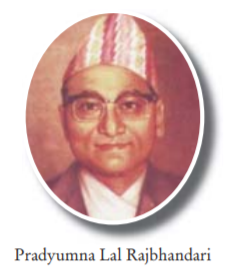

Biography:
Pradyumna Lal Rajbhandari was the third governor of Nepal.
He was the governor from June l8, l965 to August 13, l966
during the ruling period of King Mahendra. Notes were changed to
Rs from Moru. Signature of Pradyumna Lal Rajbhandari can be seen
on the notes of Rs 10 and Rs 100.